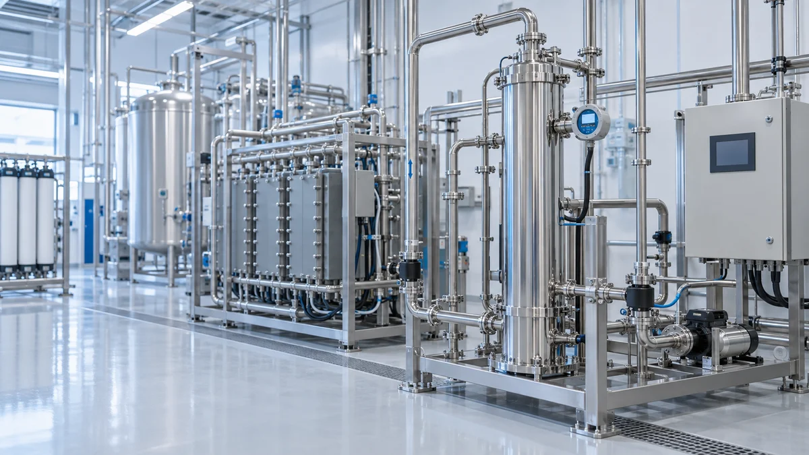
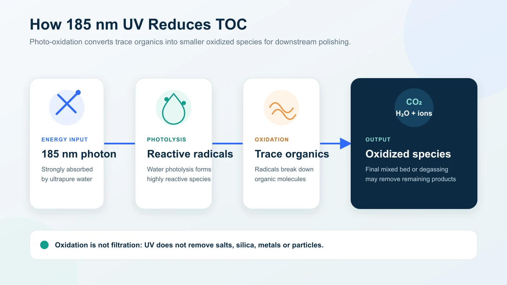
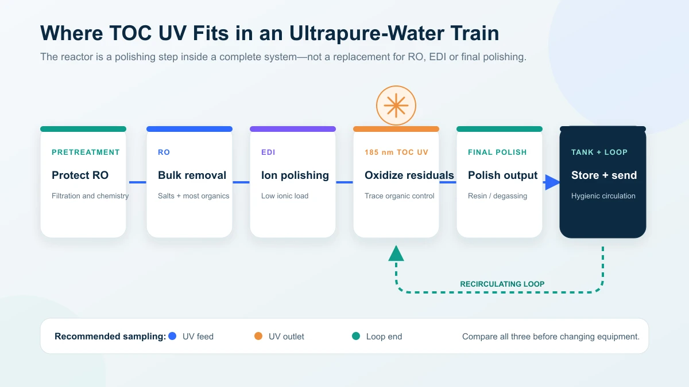

185 nm UV Systems for TOC Reduction in Ultrapure Water: A Buyer’s Selection Guide
How 185 nm photo-oxidation works, where the reactor belongs in the train, realistic reduction expectations and how to compare TOC UV quotations
Ask an Engineering Question ↗
What removes TOC from ultrapure water?
In ultrapure-water systems, RO, EDI and polishing resin do most of the purification; a 185 nm UV system reduces the trace organic carbon that remains. The unit cannot be selected from flow alone — feed TOC, outlet target, transmittance, loop design and reactor position all affect performance. KONCHE publishes 50–60% typical per-pass reduction for selected KC-TOC models and an outlet reference as low as 0.5 µg/L for selected configurations, always tied to stated feed conditions. This guide covers the mechanism, installation position, sizing inputs and quotation comparison for 185 nm TOC UV systems.
On this page
- What removes TOC from ultrapure water?
- How does 185 nm UV reduce TOC?
- Where should a TOC UV reactor be installed?
- What TOC target should you specify?
- How much TOC reduction can 185 nm UV achieve?
- When is UV alone not enough?
- What information does the supplier need?
- KC-TOC model range: a preliminary reference
- How should buyers compare quotations?
- Cost, maintenance and monitoring
- Frequently asked questions
- Request a TOC UV proposal
What removes TOC from ultrapure water?
No single treatment stage removes every organic compound.
- RO rejects much of the organic load along with dissolved salts, but rejection varies with molecular size, charge and membrane condition.
- EDI is designed primarily for ionic contaminants. It should not be relied on as the main TOC-removal stage.
- Polishing resin removes ionic species and some oxidation products, but resin and piping materials can also introduce extractables if they are not properly selected and conditioned.
- 185 nm UV oxidizes trace organics that remain after upstream purification.
The buyer should evaluate the complete treatment train rather than ask whether UV alone can meet the final TOC target.
How does 185 nm UV reduce TOC?
At 185 nm, UV energy is absorbed strongly by water. Photolysis generates highly reactive species, including hydroxyl radicals, which attack organic molecules:
H₂O + hν (185 nm) → reactive radicals Organic compounds + radicals → smaller oxidized species → CO₂, water and ionic by-products
This is oxidation, not filtration. The process may pass through intermediate compounds before mineralization is complete. Depending on the loop design, a polishing mixed bed, degassing stage or other downstream treatment may be used to remove ionic oxidation products and dissolved carbon dioxide.

Many TOC reactors also emit 254 nm UV. The two wavelengths serve different purposes:
| Wavelength | Main function | Design implication |
|---|---|---|
| 254 nm | Microbial inactivation | Used for disinfection and loop-bioburden control |
| 185 nm | Water photolysis and organic oxidation | Requires materials, lamps and sleeves that transmit the shorter wavelength |
| 185 + 254 nm | TOC reduction plus microbial control | Both duties must be specified and monitored separately |
Ordinary glass and some quartz grades absorb much of the 185 nm output. A dedicated TOC reactor therefore uses lamp envelopes and sleeves selected for 185 nm transmission, together with high-purity wetted materials such as electropolished 316L stainless steel where the application requires them.
Where should a TOC UV reactor be installed?
A common ultrapure-water sequence is:
Pretreatment → RO → EDI → 185 nm TOC UV → final polishing/degassing → storage and distribution loop

The exact position is project-specific. Some systems place the reactor after EDI and before final polishing so that downstream media can remove oxidation by-products. Other systems use a different position to support loop hygiene or retrofit constraints. The supplier should explain why the proposed position suits the feedwater, the final specification and the sampling point.
Three rules remain consistent:
- Feed the reactor with already purified water. High organic loading, particles or poor transmittance waste UV power and make performance unstable.
- Design the complete loop. Biofilm, dead legs, unsuitable tank vents and extractable piping materials can raise TOC downstream of a correctly operating reactor.
- Locate monitoring at meaningful points. Feed and outlet TOC readings, together with loop-end sampling, help separate reactor performance from contamination elsewhere in the system.
For complete process context, see KONCHE’s industrial ultrapure-water systems and electronic-grade ultrapure-water systems.
What TOC target should you specify?
The end use sets the target—not the UV reactor.
| Application | How to define the target |
|---|---|
| Semiconductor and advanced electronics | Use the fab or process-owner specification at the stated sampling point; leading processes may require single-digit µg/L or lower |
| PCB, FPC and optoelectronics cleaning | Follow the product and rinse-quality specification; requirements vary by process and yield sensitivity |
| Pharmaceutical purified water and WFI | Confirm the current pharmacopoeial and site quality-system requirements; USP General Chapter <643> Total Organic Carbon uses a 0.50 mg/L carbon reference standard for the limit test |
| Laboratory Type I water | Follow the analyzer, laboratory method and point-of-use specification; low-µg/L targets are common but not universal |
Do not copy a target from another facility without confirming the water grade, sampling location and analytical method. In regulated applications, the current official standard and the site quality unit take precedence over supplier literature.
How much TOC reduction can 185 nm UV achieve?
Performance depends on feed TOC, organic composition, flow, lamp output, reactor geometry, water transmittance, temperature and the number of loop passes.
KONCHE publishes typical per-pass reduction values of approximately 50–60% for selected KC-TOC models and an outlet target as low as 0.5 µg/L for selected configurations. These are product-line references, not universal guarantees. A project proposal should state:
- feed TOC range and organic-water matrix;
- guaranteed outlet or reduction basis;
- rated flow and recirculation assumptions;
- lamp condition used for the guarantee;
- sampling method, analyzer and acceptance test;
- any required downstream polishing.
A circulating loop can achieve a lower steady-state TOC than a single-pass installation because water repeatedly returns through the reactor. That result still depends on the rate at which the loop introduces new organics from materials, storage, venting, maintenance and microbial growth.
When is UV alone not enough?
A larger lamp is not always the correct answer.
- High feed TOC: Improve RO performance, control upstream carbon beds and identify contamination sources before increasing UV power.
- Low transmittance or particulate loading: Correct filtration and water-quality problems that shield organics from UV.
- Continuous TOC release: Investigate tanks, gaskets, piping, resin, cleaners and newly installed components for extractables.
- Biofilm or dead legs: Correct the sanitary design and sanitization program; the reactor cannot treat surfaces the water does not adequately sweep.
- Ionic or particulate contaminants: Use RO, EDI, ion exchange or filtration. UV does not remove salts, silica, metals or particles.
What information does the supplier need?
Send the same data set to every supplier so the proposals can be compared fairly.
| Required input | Why it matters |
|---|---|
| Peak and normal flow | Determines reactor and lamp loading |
| Feed TOC range and target TOC | Defines the oxidation duty |
| Full water analysis and relevant UV transmittance data | Identifies absorption, fouling and matrix effects |
| Temperature and pressure range | Affects lamp output, seals and mechanical design |
| Existing process train | Determines the correct reactor position and downstream polishing |
| Loop volume and turnover rate | Affects recirculation performance |
| Wetted-material and surface-finish requirements | Important for extractables and hygienic/UPW construction |
| Monitoring and validation requirements | Defines sensors, sampling points and acceptance testing |
| Electrical supply, controls and installation space | Determines the practical configuration |
If a supplier quotes an outlet TOC without reviewing these inputs, the number is not yet an engineered guarantee.
KC-TOC model range: a preliminary reference
The published KC-TOC standard models provide an initial flow and power reference:
| Model | Nominal flow | Lamp power | Published typical per-pass reduction* |
|---|---|---|---|
| KC-TOC-05 | 0.5 m³/h | 40 W | ≥50% |
| KC-TOC-1 | 1 m³/h | 80 W | ≥50% |
| KC-TOC-2 | 2 m³/h | 120 W | ≥55% |
| KC-TOC-5 | 5 m³/h | 240 W | ≥55% |
| KC-TOC-10 | 10 m³/h | 480 W | ≥60% |
| KC-TOC-20 | 20 m³/h | 960 W | ≥60% |
*Published product-line values. Actual performance depends on feedwater TOC, transmittance, flow, lamp condition and system design. Larger or non-standard duties require an engineered selection. See the TOC UV degradation system page for the current product information.
How should buyers compare quotations?
| Comparison item | What the quotation should state |
|---|---|
| Design basis | Feed TOC, target, flow, water matrix, temperature and pressure |
| Performance guarantee | Outlet or reduction value, test conditions and acceptance method |
| Reactor construction | Wetted material, surface finish, sleeve material, seals and pressure rating |
| Lamp system | Wavelengths, quantity, power, expected service life and restart limits |
| Monitoring | UV intensity, lamp status, run hours, TOC instruments and alarms |
| Controls and interlocks | High-flow, low-intensity, overtemperature and lamp-failure response |
| Supply boundary | Reactor, panel, sensors, valves, installation, commissioning and validation |
| Consumables and support | Lamp, sleeve and seal part numbers, lead times, warranty and training |
Comparing only chamber size and lamp wattage can hide major differences in materials, monitoring and guaranteed conditions.
Cost, maintenance and monitoring
The purchase price is only one part of the lifecycle cost:
Lamp life is manufacturer- and duty-specific. KONCHE publishes an 8,000–10,000-hour range for its TOC lamps, subject to operating conditions. Replacement should consider accumulated hours, intensity trend and validated performance—not visible lamp glow.
Maintenance frequency must also follow the water and operating data. A practical program includes:
- continuous lamp-status and run-hour monitoring;
- UV-intensity trending where fitted;
- routine TOC trending at agreed sampling points;
- sleeve inspection and cleaning based on observed fouling;
- periodic sensor verification or calibration;
- seal inspection during planned service;
- critical spare lamps, sleeves and seals held according to lead time.
EPA UV guidance for disinfection systems also emphasizes accounting for lamp aging, sleeve fouling and sensor-window fouling when evaluating long-term UV performance. The same maintenance principle is relevant to TOC reactors even though the treatment objective is different.
Can 254 nm UV reduce TOC?
254 nm UV is primarily used for microbial inactivation. Some compounds may absorb it, but deep TOC oxidation in ultrapure-water polishing normally relies on 185 nm photolysis.
Does a TOC UV reactor replace RO or EDI?
No. RO removes most salts and much of the organic load; EDI polishes ions; 185 nm UV addresses residual organics. They perform different duties in the same treatment train.
Why can TOC rise even when the reactor is operating?
Common causes include upstream organic breakthrough, extractables from resin or piping, contaminated tank vents, biofilm, unsuitable cleaning chemicals, dead legs and poor sampling practice. Compare feed, outlet and loop-end samples before changing the reactor.
What should be guaranteed in the purchase contract?
State the feedwater envelope, flow, outlet or reduction target, lamp condition, analytical method, sampling points and acceptance-test procedure. Without those conditions, a TOC number is ambiguous.
Request a TOC UV proposal
Send the peak flow, feed and target TOC, full water report, temperature, pressure, existing treatment train, loop volume and required monitoring. KONCHE can then confirm whether a standard KC-TOC model is suitable or whether the project needs a custom reactor or upstream process changes: request a quotation.
Technical note: Product capacities and performance figures in this guide are conditional references based on the linked KONCHE product information. Regulated users should confirm the current official pharmacopoeia and their site quality-system requirements before approval.
Recommended systems for this application
Systems commonly specified for the duties discussed in this guide:
185 nm TOC-reduction reactors for ultrapure-water loops, 0.25–50 m³/h.
View specifications ↗LABORATORY UPWLaboratory Ultrapure Water SystemKCLAB Type I systems — 5–100 L/h at 18.2 MΩ·cm with TOC ≤5 ppb.
View specifications ↗INDUSTRIAL UPWIndustrial Ultrapure Water System0.25–50 m³/h ultrapure systems for electronics, pharmaceutical and precision-rinse duties.
View specifications ↗Specify TOC duty
in engineering terms.
Send peak flow, feed and target TOC, the full water report and loop details. KONCHE will state the design basis behind the proposed KC-TOC configuration — feed conditions, test method and monitoring — not a catalogue number alone.